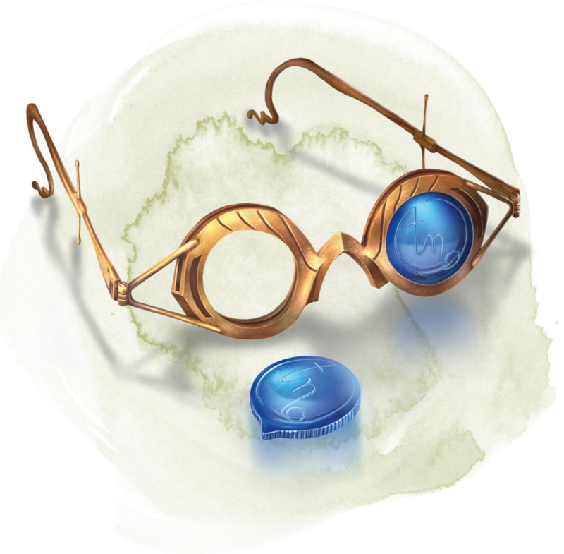

Eyes of Charming
[ Regard charmeur ]
Wondrous item, uncommon (requires attunement)
These crystal lenses fit over the eyes. They have 3 charges. While wearing them, you can expend 1 charge as an action to cast the charm person spell (save DC 13) on a humanoid within 30 feet of you, provided that you and the target can see each other. The lenses regain all expended charges daily at dawn.
Dungeon Master´s Guide (SRD)
